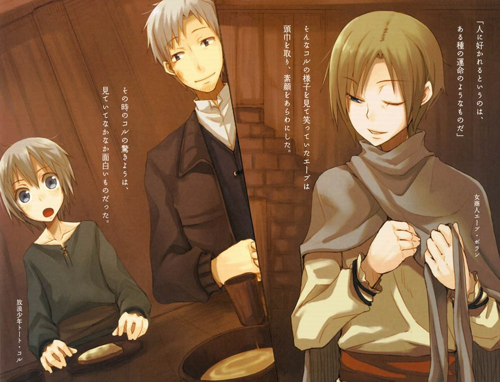
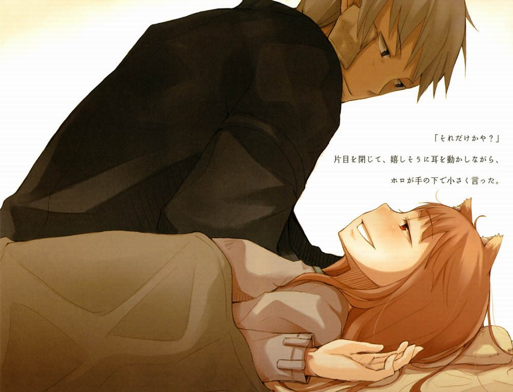

「唔唔……嗯……」
她不停往嘴裡塞進食物，匆忙咀嚼後嚥下，再次張開口。
如果用勺子舀起一勺粥送去，她會毫不猶豫地張嘴吞下肚。
有時，她的牙齒也會輕輕咬到勺子。歲數不小了，可牙齒還是像小狗似的。
這隻小狗吞下了兩碗加了足量麵包屑的厚粥之後，才終於吃飽了。她用舌頭舔乾淨粘在嘴唇上的粥，舒了口氣。此刻她正躺在床上，靠著兩個塞滿了羊毛的華麗枕頭，看上去就像是一位正在療養的公主。
只是，不管怎麼說，這位公主的體格都顯得太寒酸了一些。
作為一個很榮幸有過擁抱這身體經歷的人來說，雖然瞭解實際上並非真的那麼單薄，但不能否定的是，這看上去仍舊有些扎眼。
不對，或許是因為她的頭髮少有地被睡得一團糟，才會顯得特別寒酸。
另外，大概就是由於她臉上露骨的恐懼和不安吧。
這位寒酸的公主名叫赫蘿。
當然，赫蘿並非公主。要說起來的話，還是女王這個詞更適合她。
而且，還是白雪皚皚的北方森林中的女王。
赫蘿的頭上長著尖尖的狼耳，腰下還拖著一條威風凜凜的尾巴。
表面上看，赫蘿不過是個十幾歲的嬌弱少女；但她的真身卻是只能把一個成年男性囫圇吞下的巨狼。赫蘿自稱賢狼，寄宿在麥中，掌管莊稼收成，已經活了幾百年。
但即便擁有能與歷代諸侯媲美的高貴出身，村子裡那些祈禱麥子豐收的村民們在看到她時，也一定不會聯想到赫蘿就是他們所依賴的神。
更別提她此刻正頂著一頭亂糟糟的頭髮讓人喂早飯的樣子了，根本是威嚴全無。
的確，「咱對汝毫無防備，所以不介意讓汝看到咱出醜」這句話聽上去讓人很舒服。
對此，羅倫斯也只能回答「話都是靠人說的」了。
因為他像今天這樣小心翼翼地喂赫蘿吃飯已經是第二次了，但從未聽到她道謝。
這次赫蘿照樣理所當然地吃完了早飯，接著打了個飽嗝，靈活地動起了耳朵。她的目光有些茫然，大概是在回想著什麼吧。
沒多久，羅倫斯不悅地皺起了眉。
「你覺得如果賢狼說自己肌肉痛，會有幾個人相信？」
他邊收拾餐具邊說道，於是赫蘿的目光有了焦距。
「汝居然這樣對待柔弱的咱，嗚……」
赫蘿歪下腦袋，表示失敗。
昨天，赫蘿馱著羅倫斯和流浪學生柯爾跑了半天。
或許是在陽光下奔跑太令她興奮，明明已經累到回旅店時連樓梯都走不動的地步，卻直到睡前還在兩眼放光。
奔跑過程中她幾乎不曾休息過，反倒是緊緊趴在她背上的羅倫斯和柯爾因為疲勞而先舉手投降。
即便如此依舊興奮不已的赫蘿更像是一隻被放到野外的狗，而不是一匹城府頗深、以冷靜和勇猛著稱的森林之狼。羅倫斯用諷刺的口吻「讚賞」了赫蘿的速度和體力，不想她卻以從未有過的得意神情挺起了胸脯。
有著一身銀針般華麗皮毛的巨狼，仰頭挺胸坐在地上威風凜凜的樣子，的確無愧於她神明的稱號。
不過對於她在聽到語帶諷刺的褒獎後依舊表現出得意的神情，讓人禁不住苦笑起來。
赫蘿數百年來一直被當作掌管麥田豐收的神崇拜著，所以才會願意像個孩子似的、毫無掩飾地袒露自己的感情吧。如果不是有心善意地這樣理解，羅倫斯都快忘了赫蘿身為「賢狼」這件事了。
當然，從至今為止的旅途中他也早就明白，赫蘿的性格原本就很單純。
所以，羅倫斯毫不吝嗇地誇讚了她一番。
如果再多誇獎幾句，只怕赫蘿的尾巴都要搖斷了。
正因為昨天跑了個夠，所以今早醒來的時候赫蘿的臉色差到讓人不敢再看第二眼。羅倫斯只覺得腦子頓時一片空白，他真以為赫蘿得了什麼重病。
不過很快他便明白了赫蘿只是肌肉痛。安心之下，羅倫斯差點把她臭罵一頓。
雖說此時的赫蘿抬不起胳膊轉不了脖子，腰痛到站不起身，看上去完全就是個病人。
但和病人唯一不同的是，她的胃口驚人地好。
「畢竟馱著兩個人跑了那麼遠。」
「咱的確是跑得太興奮了。」
還算靈活的只有耳朵和尾巴了。
只是，雖說現在渾身疼得厲害，卻不見赫蘿臉上有半點後悔之意。
儘管赫蘿自己非常中意她那少女的外形，但畢竟是隻狼，在野外奔跑應該更符合她的本性吧。
這樣想來，羅倫斯才意識到，她在旅途中總表現得有點不愉快，無法以狼的外形自由活動這點或許正是原因之一。
「不過。」
正當羅倫斯這樣思考的當口，只見赫蘿輕輕打了個哈欠，說道。
「咱知道，咱今天肌肉疼到起不了床是件很丟臉的事。但只不過是騎在咱身上的汝早上也起不來，不是更丟臉嗎？」
雖然身體動不了，嘴還是那麼不饒人。
赫蘿譏諷的語氣，因為她那不自然的姿勢而顯得沒有半點氣勢。
如果柯爾也在場，可能會有些慌張，所幸他已經出門了。
「如果你能經過深思熟慮擁有先見之明，而我又能放心地隨你跑，那麼你走到哪兒我一定二話不說地跟到哪兒。不過昨晚的事，你應該還沒忘吧？」
羅倫斯反駁道，赫蘿少見地閉了嘴。
豈止是這樣，她還不甘心地咬緊了嘴唇，扭過頭去。
看來對於昨晚的失態，她還是相當有自覺的。
「真是的。別說是跟著你走了，我甚至還得牽好你的韁繩防止你亂跑。你說說，到底是誰在指引誰？」
或許這是個能讓赫蘿反省的好機會。
羅倫斯邊這樣想邊乘勝追擊。
不過，多虧了昨天赫蘿的一路狂奔，羅倫斯等人在從羅姆河下船後只用了半日就到達了港口城鎮肯盧貝。如果坐船的話，得花上兩天的時間。
這速度，任何快馬都比不上。
這樣拚命趕來自然是有目的的。
羅倫斯等人在順羅姆河而下時，得知在一個名叫魯皮的山村中祭祀著一塊狼骨，他們就是為此趕來的。雖然沒有確鑿證據，但這塊骨頭多半出自赫蘿同類身上，而教會勢力很可能為了顯示自己的權威而想要得到這塊骨頭。
這對赫蘿而言是無法忍受的事情，當然不能坐視不理。
但如果坦白說出僅是為了這樣的理由——只是因為追尋一個傳聞——而改變當初的預定，羅倫斯和赫蘿都做不到，他們都沒有直率到這地步。羅倫斯準備了「想快樂地結束這次旅行」這類的借口，赫蘿一定也有她自己的借口，所以他們都沒有挑明。
而根據現在收集到的情報來看，現在盯上了這塊骨頭的是以羅姆河流域的教會勢力為首的人們。
於是，為了能從對羅姆河流域瞭若指掌的艾普口中獲得情報，羅倫斯等人才來到了這個名叫「肯盧貝」的城鎮。
身為貴族的艾普，在家族沒落後成為了商人，在雷諾斯鎮與教會一同幹過不正當的勾當。所以她的情報網應該相當龐大。羅倫斯相信只要以雷諾斯鎮的皮毛的事，以及她為了搶先運出皮毛而故意弄沉了船阻礙河道運輸的事作為交換條件，一定能從她嘴裡套出不少消息。
為此，羅倫斯等人下了船，騎在赫蘿背上追趕艾普。
但他們還是失算了。跑了一段距離追到的那條船隻上，並沒有艾普的身影。
在船上的是羅倫斯等人寄宿在雷諾斯鎮旅店的店主——亞洛爾德。雖然這證實了羅倫斯沒有找錯船，這船的確和艾普有關；但奇怪的是，原本囤積在船上的大量皮毛不見了。
艾普原本的確是帶著大量皮毛前往肯盧貝的。
這樣一來，她中途改換陸路運送皮毛的可能性就變得非常高。如果想要快速運送貨物的話，水運確實是很好的選擇；但既然距離不遠，那就意味著並非只有這一個方法。
不論是因為幸運還是原本就計劃好的，總之，只要能弄到馬匹，中途改換陸路運輸這一選擇並不奇怪。
或者說，在將船沉入河中，導致後面的船隻無法通行的情況下，運載著皮毛已經順流而下的船隻自然而然地會被人懷疑是肇事者。如果就這樣毫無遮掩地運送皮毛向下遊行進，等於公開宣佈自己就是犯人。所以，在途中更換為陸路運輸是個逃避嫌疑的有效方法。
羅倫斯帶著這樣的想法，斷定艾普已經隨載著皮毛的馬車一同前往肯盧貝了。雖然赫蘿堅持要從亞洛爾德口中逼問出艾普的下落，但羅倫斯最終還是說服了她。於是三人便繼續向下遊行進。
黃昏時分，赫蘿發現了遠方的商隊，這證明了羅倫斯的觀點是正確的。
那是艾普率領的隊伍。
羅倫斯等人繞道先行抵達了羅姆河終點所在的城鎮肯盧貝。在入口處等待艾普的出現。
當艾普出現時，她整個人堪比剛從墳墓中爬出的死屍。
在冰冷的寒風中，羅倫斯等人與艾普一同進入了肯盧貝。簡單商談之後，幾人住進了由艾普介紹的旅店裡。
原本赫蘿並沒有料到會在這裡見到艾普。所以儘管現在羅倫斯佔據上風，但對於商談的內容他還是有些難以啟齒。
恢復了少女外貌的赫蘿顯得異常興奮，雖說已經累到快要連話都說不出的地步，卻依舊兩眼放光。
這樣的赫蘿要是與在雷諾斯鎮引起一場騷亂的艾普進了同一間屋子會發生怎樣的情況，羅倫斯並不是沒有想過。
只是不曾料到兩人竟然差點扭打作一團。
「因為汝太軟弱了。別忘了汝臉上那傷是怎麼來的。」
赫蘿堅持自己行為的正當性。
「你不會真的認為通過批判對方才能夠證明自己的正確吧？」
「嗯……」
赫蘿噘著嘴揚起頭。
看來她知道自己錯了。
羅倫斯倒也明白為什麼儘管如此她還是不肯認錯，不過——
「在這點上艾普還真是明智。面對你的挑釁，她沒有選擇迎戰而是撤退。知道為什麼嗎？」
赫蘿的目光從羅倫斯身上移開。
羅倫斯幾乎是倒剪著她的雙臂，才沒讓她真的撲上去揪住艾普。
當時，艾普用蛇一般的目光冷靜地打量了幾人，然後不曾威嚇也沒有無視，而是輕輕微笑起來。
「因為她知道，和我們鬧僵了對她沒有好處。」
「汝覺得咱是不懂衡量利益得失的小毛孩嗎？」
簡短地反駁完後，赫蘿閉上了嘴。彷彿肚裡還有成千上萬的抱怨在糾結一般，她的表情逐漸扭曲了。
羅倫斯有些無奈地看著她。
從那對耳朵看來，她心裡的怒氣顯而易見。
既然沒有真的生氣，那麼為何又會做出如此舉動呢，要說理由的話——
「艾普明白，你是在毫無緣由地生氣，就像個孩子那樣脾氣陰晴不定。你那樣的行為，就叫不懂衡量利益得失。」
也就是說，艾普當下便明白了自己觸碰了不該碰到的底線。
可是如果對方發火發得有理，那麼自己也可以用道理來應對。而如果只是因為感情用事，那麼道理只會產生反效果。所以艾普乾脆地認輸了。
這樣一來，就算赫蘿無理取鬧，也拿她沒辦法。
只是赫蘿心裡還是憋著火吧。
儘管在道理上不得不原諒艾普，但赫蘿在感情上仍然無法認同。她正被這一魔咒束縛得咬牙切齒，如果想要解開，必須由羅倫斯詠唱魔法。
真是個麻煩的公主啊！
「算了，既然已經經過了那麼猛烈的情感碰撞，接下來的商談反而能冷靜地進行了。我們獲得利益會變得更容易。」
「……然後呢？」
赫蘿瞥了他一眼。
羅倫斯有些不好意思地聳聳肩，接著輕聲歎了口氣。
那是無奈的歎息。
「你肯為了我生氣……是啊，得謝謝你。」
自古以來所謂契約都是用語言來締結的，而現在看來，這一點不只在生意上行得通。
親口說出這種話實在讓羅倫斯感到羞愧難當，但如果赫蘿表示非聽不可，那也沒辦法。
因為在交易時，必須找到彼此的妥協點。
「嗯，既然汝都這麼說了。」
赫蘿的臉色終於放晴，耳朵也愉快地聳動起來。
窗外，隔著一條街的集市的嘈雜聲漸漸傳入屋內。
冬日的陽光暖暖的，站在太陽底下會讓人有種春天來臨的錯覺。
羅倫斯用苦笑掩飾了自己的尷尬，赫蘿也跟著笑了起來。
平靜而悠閒，無可替代的愜意時刻。
「那麼我先把餐具收拾了……」
「嗯。」
赫蘿隨聲附和了羅倫斯的自言自語，接著垂下耳朵和雙眼，打算整理尾巴上的毛。
這一光景在至今為止的旅程中不知出現了多少次。
但有一要素與平時完全不同。
這一要素就是當房門被叩響時，二人才想起柯爾之前出門買東西的事。片刻，門被打開了，只見柯爾正抱著一個木碗似的東西站在門外。
就在羅倫斯開始回憶柯爾究竟是為了買什麼而出門的時候，一陣強烈的氣味湧入鼻腔。那味道不知該怎麼形容才好，總之就是一種用硫磺與碾碎的香草同煮後散發出的獨特氣味。
這刺鼻的氣味惹得羅倫斯不禁想要躲開，但柯爾卻絲毫不介意。
「我做了軟膏！」
他邊說邊輕快地走進屋子。
從他氣喘吁吁的樣子可以看出，他是跑著回來的。
赫蘿很喜歡柯爾，對他愛護有加，而柯爾也很親近赫蘿。
一大早，柯爾剛一看到赫蘿的樣子，他便如脫兔般跑向了鎮上熱鬧的早市。
北方人對於藥草知識非常豐富。
可以說，他們對從小小的割傷到熱病為止的各種傷病都有相應的對策。所以，柯爾所製作的軟膏應該能有效治療肌肉痛吧。
只是這個氣味就讓人為難了。
一想到這兒，羅倫斯忽然抽了口涼氣。
赫蘿。
羅倫斯扭過頭，只見那只以聽力和嗅覺聞名的約伊茲賢狼正夾著尾巴，顯得非常苦悶。
只能對赫蘿表示同情了，畢竟她拉不下臉拒絕柯爾好心製作的軟膏啊。
羅倫斯裝作沒有看見赫蘿從枕頭的陰影中向自己投來的求救目光。就在即將與柯爾擦肩而過之際——
「啊，這個軟膏，還能治療羅倫斯先生的傷呢。」
把臉埋在枕頭裡的赫蘿愉快地聳了聳耳朵。
深綠色的軟膏粘乎乎的，顯得很詭異。
羅倫斯將它塗在紗布上，並把紗布貼在了臉上的淤腫處。那一瞬間，刺鼻的氣味如同鋼針般扎進了鼻腔，整個臉頰蔓延出一種強烈的熱感。眼睛也被刺得生疼，鼻子都快被嗆歪了。
為了製作這軟膏，柯爾肯定從他那微薄的路費中拿出了不少錢。所以即便非常痛苦，羅倫斯依舊無法拒絕。
不過話說回來，這味道真是太可怕了。
在為赫蘿的肩和腰部上藥時，她向羅倫斯投去了怯懦的目光。赫蘿嗅覺敏銳，一定很難受吧。
煎熬之下，羅倫斯難免帶著一種「不能只有自己一個人受罪」的想法，而且這藥看上去應該挺有效的，所以他還是為赫蘿上了藥。
在塗軟膏時，赫蘿時不時發出一種難以形容的聲音，聽上去有些嚇人。
看來得重新為她買套衣服了，或許，美酒更合適。
塗完藥後，她一定會狠狠地瞪自己一眼，羅倫斯禁不住這樣想道。
「啊，對了，剛才在回來的時候遇到了昨天的那位商人，他說想見見羅倫斯先生。」
為赫蘿身上疼痛嚴重的部位再塗了一層軟膏之後，羅倫斯把手擦乾淨。
這藥的藥性毫無疑問相當地強，所以應該很快就能奏效吧。
或許是因為這軟膏的氣味太刺激，赫蘿開始在床上呻吟起來。羅倫斯看了她一眼，反問柯爾。
「昨天的商人，你是說艾普？」
「是的。」
「這就是所謂兵貴神速嗎？也是，畢竟不知什麼時候就得離開了。」
艾普雖身為沒落貴族，卻以商人身份成功崛起。
在木材和毛皮之鎮雷諾斯，她以坑害羅倫斯的方式令人難以置信地贏得了皮毛的交易。而且在運送通過這場豪賭獲得的皮毛時，她還不忘弄沉了船，使其他人無法順利運送皮毛。
憑借她的狡猾、智慧和膽識，應當是萬無一失。但如果在這個鎮上浪費時間，很可能會在意想不到的地方失手，所以艾普一定會盡快離開這裡。
並且，她還必須將從雷諾斯鎮運來的皮毛從這裡運往下一個城市。
儘管這個城市才剛剛甦醒，但對於艾普而言，已經夠晚了。
「她有沒有告訴你我該去哪兒找她？」
「呃，她說過一會兒到這裡來。」
「……這樣啊。」
艾普手頭的事情很多，所以她特意前來想必還有其他意圖。
羅倫斯能立刻想到的，只有她希望他不要將自己是在羅姆河弄沉船隻的罪魁禍首一事抖露出去。
「對了，你吃早飯了嗎？」
「啊？呃……吃、吃了。」雖然沒有赫蘿那麼敏銳，但羅倫斯作為商人，想要看透一個人是否撒謊還是有一手的。
他輕輕彈了一下柯爾的頭，接著一言不發地將裝著麵包的麻袋塞到他手中。
雖然柯爾以「想要利用教會權利保護異教的村子」這一怪異的理由進入阿肯特的學校學習教會法學，但他卻比真正的正教徒更像個正教徒。
柯爾接過麻袋，臉上露出一絲疑惑，但羅倫斯裝作沒有看見的樣子，轉身走向正在毛毯下呻吟的赫蘿。
當他說自己要出去一下的時候，雖然赫蘿沒有抬頭。卻用耳朵給了他回答。
羅倫斯本以為她可能是由於軟膏的緣故已經昏了過去，但沒想到事實並非如此。
羅倫斯自己也不知不覺忽略了那股氣味。而相對地，塗有軟膏的右臉頰依舊帶著熱度，能感覺到淤腫正在逐漸退去。
或許身為狼的赫蘿能更加清楚地體會到藥效。
剛離開床邊，就聽見赫蘿扔來一句「汝輸了咱可不管」，看來羅倫斯想得沒錯。
羅倫斯放下心來扭過頭，只見抱著麻袋站在原地的柯爾已經取出了兩個麵包。
袋裡裝著普通的黑麥麵包和加了胡桃的黑麥麵包，而他手中的兩個都只是普通的黑麥麵包。對於柯爾的小心謹慎，羅倫斯不禁苦笑。
真希望赫蘿能向他學學。
「你要跟我來嗎？」
他是問柯爾要不要一起去見艾普。
柯爾的目光游離了一陣，最終點點頭。
羅倫斯想要得到的，是那塊和赫蘿一樣被稱作神或精靈的狼的腿骨。這塊腿骨，屬於柯爾故鄉附近的一個村子裡祭祀的神。
而柯爾是因為想要確認那塊圍繞腿骨的傳聞是真是假，才會要求與羅倫斯和赫蘿共同旅行的。
所以，他不可能不想去。
但羅倫斯之所還是要這樣詢問，是因為他覺得如果不問的話，柯爾是不會跟著走的。
柯爾年紀雖小，顧慮的事情倒不少。
他之所以親近赫蘿，或許是因為覺得那種旁若無人的氛圍很新鮮吧。
「那就快點吃完。」
羅倫斯說著就要離開，於是柯爾急忙將麵包塞進了嘴裡。
「是、是。」
接著，羅倫斯這樣對他說道：
「我想你吃完以後，還是會露出一副剛吃了小麥麵包一樣滿足的表情吧？」
儘管行為舉止在修道院的教育下顯得有禮有節，但在吃東西時他總會透出一點野性，或許是因為現在的旅行實在太窮酸了。
此刻的柯爾正兩頰漲得鼓鼓的，就像栗鼠一樣。
沒過多久，他似乎明白了羅倫斯的意思，於是笑著嚥下麵包回答道：
「吃飯時要掩著嘴，教會裡教過。」
「但反過來講，這樣做也是為了掩飾吃的是好東西吧？」
羅倫斯關上門邁開腳步，柯爾就像個忠實的徒弟似的，牢牢地跟在他身後。
「麵包非常好吃。」
柯爾甜甜地笑著說道。這孩子真的很機靈。
旅店的一樓是食堂。
進食早餐這種奢侈的行為只有旅行者才會做，所以圍在桌邊的人們基本上都是整裝待發的樣子。
而混在其中的艾普依舊穿著那身衣服坐在桌邊，所以乍一看上去，她和那些立刻就要啟程的人們沒什麼兩樣。
或許這一見解並沒有錯，不過羅倫斯眼下所關心的，是艾普儘管用布掩住了臉，卻還是用手摀住了鼻子。
「……好重的味道。」
櫃檯內的店主有些不耐煩地瞪著羅倫斯。其他客人甚至忘了憤怒，只是吃驚地看著他們。
事已至此，羅倫斯已經無所謂了。至於柯爾，他似乎從一開始就沒介意過。
因為來自的地方不同，人們喜歡的味道也各不相同；所以，同時對某種氣味表示反感，應該是極端的個案吧。
羅倫斯帶著這樣的想法坐到了艾普對面的椅子上，只聽對方說出了令人意想不到的話語。
「不過，這味道好久沒聞過了。我想你的傷到晚上就應該能痊癒。」
用柯爾製作的軟膏敷著的右臉頰，是在與艾普爭執時不小心被柴刀柄打傷的。
她的語氣中帶著一絲調侃。
「是他幫我弄來的，真是博學多才啊。」
羅倫斯指指身後的柯爾，誇張地說道。
「嗯？羅埃弗的人？」
艾普靜靜地注視著柯爾，隨後閉上了眼。
羅倫斯摸不透她在想些什麼。
「我對羅姆河沿岸可是瞭如指掌，你不就是因為這才追我到這個鎮上來的嗎？雖然我不知道你用的是什麼方法，不過確實速度驚人。」
艾普瞇起了頭巾下的雙眼。
商人的優點就在於：哪怕剛剛打了個你死我活，只要利害關係一致，雙方就能立刻握手言和。一旦有了契約關係，就不存在任何情感上的芥蒂。
雖然在雷諾斯鎮發生了那樣的事，但此刻的二人仍可以像舊友一般熟絡。
「昨晚我吃驚地看到了近年來很少看到的東西，我還以為是契約書不夠周到呢。」
雖然赫蘿繞彎子的說話方式總讓羅倫斯頭腦發昏，但對艾普這樣的態度，羅倫斯再明白不過。
心中躁動的，或許是一種接近戀愛的情感。
商人互探彼此的底牌，是件非常愉快的事情，讓人有種莫名的興奮。
「嗯，我想要的只有你的知識。因為我和你之間，沒有締結任何買賣的契約。」
這句話是在告訴艾普，自己的目標絕非她的毛皮生意。
艾普輕輕點頭，站起身道。
「換個地方吧，在這裡會被其他客人和店主討厭。」
這話充滿了惡作劇的意味，但又明顯不是句玩笑話。於是，羅倫斯帶著柯爾跟在艾普身後。
「對了，你的旅伴怎麼樣了？」
走出旅店，眼前是一條狹窄的小道。或許說是一條較為寬敞的小巷更為合適。
肯盧貝鎮被河流分隔成了南北兩個部分，羅倫斯等人寄宿的旅店位於小鎮北側。
北側少有漂亮的建築物。雖然河岸邊的市場也很熱鬧，但在離市場不遠處多是小巷和傾斜的房屋，讓人不禁感覺有些荒涼。
不知是參事會對於城鎮景觀的政策寬大，還是無力作為，建築物的高度也參差不齊。
照鎮上的情形來看，很有可能是後者。
羅倫斯正思考著，只見艾普毫不猶豫地向市場的反方向走去。
「我那旅伴因為旅途勞累，身上也塗了軟膏，在床上休息著。」
「這……」
艾普說著回過頭看向柯爾，羅倫斯能察覺到她隱藏在頭巾裡的臉上露出了笑容。
「她一定很快就會恢復的。」
就算不是赫蘿，羅倫斯也明白她是將「這真讓人遺憾」這句話咽進了肚裡。
只有柯爾有些驕傲地笑了。
「不過，這對我而言或許是種幸運吧。不，對你來說應該也是幸運。」
「彼此彼此。」
羅倫斯聳聳肩，苦笑道。
昨晚羅倫斯沒能從艾普口中得到情報，是因為赫蘿實在過於咄咄逼人了。
「不管怎麼說，能為自己發火的人是珍貴的財產，好好待她。」
「說不定是她把我看作她的財產，因為見不得我被傷害，所以才生氣呢。」
艾普裹在外套裡的雙肩顫了顫。
就在這時，一個背著滿滿一筐冬季蔬菜的女子從路邊迎面走來。
這菜或許是正要拿到市場上出售吧，菜葉的顏色比夏季蔬菜的綠色更深，給人一種冰冷的感覺。這菜看樣子不適合做成醬菜或生吃，儘管如此，放進湯裡一定相當美味。
「如果你旅伴認為你是她的所有物，她應該會當即提出賠償要求。可那時她想要的，卻是復仇。」
艾普淡藍色的眼中忽然透出一絲寂寥。
家道中落後，艾普曾被一個想要得到貴族稱號的暴發戶買下。
用金錢成了艾普主人的商人，當她受到傷害時，究竟向加害人提出了什麼要求呢？
是金錢賠償，還是復仇。
羅倫斯感覺光是思考這個問題就等於在傷害艾普。
對於自己不假思索地做出了錯誤的選擇一事，他稍稍有些後悔。
「呵呵，像這樣勾起對方心中的罪惡感和煽起同情心，那之後的商談就能順利多了。」
艾普的話頓時將羅倫斯拉回了現實。
色誘和眼淚無論什麼時候都能在正經生意中輕易奏效。
無論怎麼警惕，都會不由自主地上鉤。
羅倫斯撓撓頭，還是露出了笑容。自然，其中是有原因的。
「不過，你為什麼要告訴我呢？」
羅倫斯用對答案饒有興致的口吻，邊看著拚命想要理解對話的柯爾邊問道。
「我坦白自己設下的圈套，為的是解除你對我的戒心。」
「是啊，目的是想讓我陷進更加高明的圈套。」
如果此刻艾普解下頭巾，她的臉上一定正帶著邪邪的笑容。
羅倫斯彷彿明白了赫蘿為什麼要叫她狐狸了。
這商人太像一隻狼，以至於身為狼的赫蘿不願承認她和自己是同類。
「我們到了。」
「這裡是？」
羅倫斯剛一站定，柯爾就撞上了他的後背。他一定是為了盡可能多地學習這兩人的交談方式，而只顧反芻剛才聽到的內容吧。
回憶起自己也曾對著老師做過同樣的事，羅倫斯不禁對柯爾又多了一層親近感。
「這是我在這個鎮子的據點。說成不掛招牌的商會，你應該能明白什麼意思吧。」
與周邊的建築物相比，這幢房子的牆上滿是黑斑，屋頂也是一副隨時會滑落的樣子，但石塊組成的地基部分還是相當牢固。
聽了艾普做作的發言，柯爾感到了一陣不安，乾嚥了口唾沫。
但這毫無疑問只是玩笑話。仔細觀察之下，能發現黑色的牆壁上有被卸下了什麼東西的痕跡。
簡單說來，這應該是個倒閉了的廢棄商會。
「請你別太捉弄他了。」
艾普伸手推門時，羅倫斯的聲音從背後響起，柯爾聞言詫異地「啊」了一聲。
這時，他似乎才察覺到是自己太遲鈍了。
艾普回過頭來，雖說應該不是為了確認柯爾的反應，但還是愉快地笑道：
「因為是你疼愛的徒弟？」
「很可惜，他不是我的徒弟，更不是商人。所以，我不想把他培養成一個彆扭的人。」
聽了這話，艾普以她一貫的性格，爽朗地大笑起來。
「哈哈哈，沒錯，確實如此。商人都是很彆扭的。」
沒有理會在一邊不甘地抿著嘴的柯爾，這兩位彆扭的商人一同走進了建築物。
羅倫斯回頭看去，只見柯爾有些不悅地跟了進來。
羅倫斯一邊苦笑，一邊無奈地歎了口氣。
因為他覺得，如果柯爾成了商人，那麼他這難得的率直性子或許會被扭曲。
艾普端出了用山羊奶製作的黃油和蜂蜜酒混合而成的飲料。
只有柯爾喝的是蜂蜜而不是蜂蜜酒。
或許由於這黃油確實不錯，羅倫斯甚至想要來一塊有些苦味的黑麥麵包了。
「亞洛爾德先生應該還沒到吧。」
羅倫斯等人進來後，發現屋裡一片寂靜。
客廳裡只有暖爐中炭火燃燒的聲音，以及爐邊的鍋中加溫山羊奶的細微聲響。
羅倫斯坐在暖爐前，看著艾普以出人意料的熟練動作準備飲料；而那時，屋裡也並沒有發出其他聲響。
「可能今天傍晚到。吃嗎？」
艾普說著，拿起一塊剛用小刀切好的小麥麵包問道。
上面還塗著凝固了的山羊奶，這應該是煮出的奶皮吧。
如果再加上鹽和用油漬過的鯡魚片，肯定非常美味。
「吃了這種東西的話，今後的旅途就會顯得很痛苦了。」
「正是，養刁舌頭讓旅費暴漲吧。不過，不是商人的人就沒必要介意這種事情了，對嗎？」
艾普說著將麵包放在柯爾面前。
柯爾吃驚地看著艾普，接著又為難地看向羅倫斯。
「所謂被他人喜歡，其實可以說是命中注定的。」

看著柯爾的神情，面露笑容的艾普取下頭巾，露出了本來面目。
而此刻柯爾吃驚的表情，則顯得非常有趣。
「說不定我心裡還留著一些所謂的母性本能呢。」
艾普自嘲地笑了笑。隱藏著一絲憂鬱的艾普美到讓人驚訝。
羅倫斯經常會思考這樣一個問題，說不定女性比起男性來更適合當商人。
只要她露出這樣出人意料的一面，只怕無論多麼精明的男人都難以與她較量。
「那麼，你想知道什麼？」
柯爾一口一口地享受著小麥麵包的美味，而不像之前吃黑麥麵包時那樣狼吞虎嚥。看著這樣的柯爾，艾普先開了頭。
「不該問的事。」
「羅姆河沿岸商會在尋找異教神的聖遺物……我也不清楚異教是不是也用聖這個字。是這件事吧？」
羅倫斯點頭。艾普的目光變得有些迷茫，她端起山羊奶喝了一口。
「那個傳聞在大約流傳到羅姆河一帶的城鎮時，被他們描述得活靈活現，曾一度讓那些幹不法勾當的傢伙們垂涎三尺。」
「真相呢？」
遠處傳來孩子的啼哭聲。
在這個城鎮，孩子的哭聲比鳥叫聲更尋常。
「應該說沒什麼特別的。沒等骨頭真的被找到，傳言就以和擴散時相同的速度沒了消息，不過是酒桌上的談資而已。」
艾普不像是在說謊，而且她也沒理由說謊。
但所謂無風不起浪。
「傳言的出處是羅姆河的支流，位於羅埃弗河上游城鎮的李斯科的商會，這點沒錯吧。」
而那個李斯科的商會與本鎮的吉恩商會有銅幣生意。
而且在銅幣交易中有個怪異之處，那就是進口的銅幣箱數和出口的銅幣箱數對不上。
至今為止羅倫斯還是沒能弄明白，但此刻正在他身邊津津有味地吃著麵包的柯爾似乎察覺到了原因。
因為沒必要急著知道，所以一直沒有詢問答案。並且如果不憑自己的力量弄清的話，羅倫斯知道自己一定不甘心。
「對，記得名字是叫迪巴商會。他們掌握著李斯科鎮礦山的專利權，現在正是風光的時候。」
「在這個鎮上，吉恩商會是他們的主要客戶？」
「哦，我都想問你這些消息是什麼時候弄到的了，看來花了不少功夫調查啊。」
艾普用麵包沾了沾山羊奶，咬了一大口。
看著她的樣子，羅倫斯心想，或許帶赫蘿來也不會有什麼事吧。
有那麼美味的食物，赫蘿一定會被籠絡。
「李斯科鎮的迪巴商會，以及我們為了毛皮引起一場騷亂的雷諾斯鎮的教會，還有本鎮的吉恩商會，這三家是掌管銅製品流通的樞紐。只是，雷諾斯的教會不過是想借另兩家之間的不和趁機收稅罷了，而迪巴商會和吉恩商會應當是有默契的。」
「這又是為什麼？」
羅倫斯不假思索地問道。艾普聞言，苦笑似地勾起唇角。
柯爾似乎也察覺到了什麼，抬起了頭。
「抱歉，我沒有惡意。」
艾普垂下雙眼用手摸了摸嘴角，像是對自己的笑表示歉意般繼續說道。
接著她睜開一隻眼睛看著羅倫斯。
「在我的印象中，你應該是位相當慎重的商人啊，為何會對這種玩笑一般的傳言那麼認真？」
商人在提問時，基本上心中已經有了答案。
艾普平靜地，但同時也是愉快地笑著。
「如你所見，我的旅伴是北方人。」
羅倫斯回答。艾普一臉恍然大悟的表情，看向手中的杯子。
「要不是為了那位可愛的小姐，你也不會做出不合理的事情了吧？」
「這我倒不清楚。」
雖然不願承認，但羅倫斯還是順口接了上去。
艾普的眼中透出一絲笑意，沒有繼續追問。
「也是，故鄉的人們所崇拜的神體被用金錢買賣這種事，想來任誰都無法忍受。不過這樣一來，我倒有個問題。」
「怎麼說？」
維持著注視杯子的姿勢，艾普抬起雙眼看向羅倫斯。
她那愉快的神情，簡直就像一個抓住了對方的把柄想要狠狠殺價的商人。
「你是用金錢買賣物品的商人吧？這樣一來，你算是那位小姐的同伴，還是敵人呢？換一種說法，你代表善，還是……惡？」
柯爾詫異地向後縮了縮身體。
的確，羅倫斯是個以賺錢為目標，任何問題都用金錢來解決的商人。
這與那些企圖用金錢買下那塊被稱為神的狼骨，並想要將其用作某種目的的人們沒什麼兩樣。商人就是如此，無論面對怎樣的大門，使用的鑰匙都是金錢。
如果狼骨的事情是真的，那麼一旦弄清了它的下落，羅倫斯一定會用商人的手段來設法奪回骨頭。
但這樣一來，赫蘿和柯爾會怎麼想呢。
毫無疑問，羅倫斯打算用錢來買下狼骨。
那時，羅倫斯還能算是赫蘿和柯爾的同伴嗎？或者說，購買狼骨這一行為，究竟是善還是惡呢？
羅倫斯舔舔被山羊奶沾濕的嘴唇，回答道。
「用金錢購買東西這一行為並不是惡。當金錢被用作購買物品以外的東西時，基本都會稱為惡。」
「你的意思是？」
「如果我因為權威和權力，或者僅僅為了討旅伴的歡心而買下了狼骨，旅伴一定會輕視我。金錢說到底不過是購買物品的道具，而當它被用來購買物品以外的東西時才會被視作惡。這就像是有人用砍木頭的斧子砍人一樣。我想，我的旅伴一定能理解我。」
艾普瞇起眼睛，唇邊的笑意更深了。
以金錢解決一切問題的商人們，經常被人質疑他們行為的正義性。
而對於商人而言，信用是最為重要的東西之一。
這樣一來，在自身的正義被質疑時如何作答，將決定一個商人的資質。
正義的資質和人的資質。而這兩樣東西是要被放在天平上，以信用為砝碼來稱量的。
雖說羅倫斯還不確定艾普的想法是否如此，但她至少想將這作為重要的判斷條件，這點絕不會錯。
帶著有些陰沉的笑容聽羅倫斯回答的艾普忽然緩和了表情，將手中的杯子舉了起來。
「其實我很想和你做生意。抱歉，不該問這種怪問題。」
羅倫斯也勾起左側的唇角，同時舉起自己的杯子送了過去。
羅倫斯只是把杯子湊上前去而沒有碰杯，出於考慮到對方萬一使用的是高級銀餐具，這樣做可以避免將其損壞。這樣的禮儀，相當於告訴對方，自己認為對方擁有配得上使用高級銀餐具的身份。
「我之前說過，看著你和你的旅伴感到很羨慕。這種想法從來沒像現在這樣強烈過。」
「那麼，我就以此為榮吧。」
艾普無聲地笑了，雙肩抖了抖。
接著，她的目光從羅倫斯身上轉到柯爾身上，臉上已經恢復了商人的表情。
「看來你的確不是克拉福.羅倫斯的徒弟。不過我還是想說，我個人打心底裡認為這很可惜。」
柯爾聽了這話瞪大了雙眼，接著，像是有些為難地垂下了頭。
羅倫斯也笑著想，這確實可惜。
之所以感到為難，是因為柯爾明白自己不可能採納艾普的意見。
艾普似乎也明白這一點，她笑著閉上了眼睛。等再次睜開時，目光又對準了羅倫斯。
「有些事我想你很清楚，不過迪巴商會尋找的這塊狼骨不是區區百枚盧米歐尼金幣就能解決的事情。如果貿然出手，恐怕只會讓你瞭解人命到底有多廉價。不過儘管這樣，我還是相信自己身為商人的眼光，也願意對你報以同等信任。」
慢慢地轉著手中的杯子，羅倫斯喝了一小口杯中的飲料。
如果不在這兒說得誇張點，赫蘿一定會生氣的。
「我曾在金錢和生命中選擇了生命，但我旅伴是比生命更重要的東西。而我，也很『期待』。」
這是羅倫斯在與艾普做人命交易的時候透露出的真心話。
艾普咧開嘴，露出了化為狼時的赫蘿才會露出的笑容。
「偶爾按照藏寶圖追尋寶藏，可能也挺有趣的。好啊，你們的目的是從與迪巴商會有著密切往來的吉恩商會身上獲得情報，對吧？我為你們給吉恩商會寫封介紹信，剩下的事情……」
閉上一隻眼睛微微歪著頭，或許這是艾普胸有成竹時才會擺出的姿勢。
「就得看你了。」
這樣的她太迷人了，這話被赫蘿聽見，一定會氣得咬牙切齒，但這樣的艾普確實非常有魅力。
艾普是個純粹的商人。
她相當天才，完全懂得該怎樣控制表情，透露怎樣的信息。
羅倫斯恭敬地低下頭。
原來馳騁在黃金大道上的商人如此了不起啊！他想。
用小刀裁斷高價的羊皮紙，寫下內容後灑上沙子吸乾墨水。在等待墨水乾透的期間，艾普取來了用馬尾毛搓成的繩子，和被染成紅色的蠟。
算算時間，墨水應該干了。艾普捲起羊皮紙用蠟封住，接著捆上用馬尾毛搓成的繩子。一封親筆信完成了。
雖然這看起來只是一封普通的書信，但對商人而言卻能換來高額的利益。
對於艾普所說的，想要再與自己做一次生意這句話，羅倫斯覺得即便相信了也無妨。
「如果沒有意外，我會在明天正午過後離開這個城鎮，走海路南下，暫別這個寒冷的地方。」
「那麼我為你送行吧，也算聊表謝意。畢竟這是在你成為大商人之前能見到你的最後機會。」
羅倫斯接過書信稍稍晃了晃，艾普苦笑著點頭道。
「啟程之前我得好好休息一整天。如果你晚上來的話，我還能讓傭人準備一頓晚餐招待你。」
「那如果天亮時來呢？」
或許艾普的微笑就相當於普通人的詫異吧。
笑容在她臉上停頓了片刻，終於，她再次抱起胳膊歎了口氣。
「如果不止我一個人在這裡的話……是啊，我就證明一下自己的能力吧。」
在雷諾斯鎮上羅倫斯第一次與艾普交流時，她就曾半開玩笑地說過，她自信自己不是會討人嫌的人。
看來這句話並不是玩笑。
艾普用與原本的貴族身份相襯的溫柔語氣說出這話，她沙啞的聲音顯得如此高貴，聽得人心裡癢癢的。
柯爾張大了嘴，愣愣地注視著這樣的艾普。
如果再穿上華服打扮一番，那就是不折不扣的女貴族了。
「恐怕晚上被料理的不光是牛肉豬肉之類吧，我似乎有必要小心留意。」
「呵呵，如果你那位旅伴的心情好轉，不如三人一起來。」
「我會的。謝謝你的介紹信。」
羅倫斯回答道。艾普點點頭，輕輕揮手後緩緩關上了門。
沒有商人會在告別時揮手。
而這一動作，不是對著羅倫斯做的，而是他身邊的柯爾。
羅倫斯將介紹信小心翼翼地收入上衣內側，瞥了一眼身後。
果不出所料，柯爾有些戀戀不捨地凝視著緊閉的大門。
「這人很有趣吧。」
見羅倫斯邁開步子，柯爾這才回過神來，急忙跟了上去。
「呃……嗯，是的……」
「不過我這傷就是她弄的。」
羅倫斯指指敷著軟膏的右臉頰。柯爾似乎沒聽明白是怎麼回事，愣愣地注視著羅倫斯臉上的傷。
接著，他似乎終於恍然大悟，帶著一臉不可置信的神情回頭看向那房子。
「我們吵起來了，於是被柴刀柄呼地一下。」
「……是這樣……啊。」
「雖然她也有令人意外的一面，不過正因為如此，才不能掉以輕心。就像她的頭巾下藏著美貌一樣，那美貌下也隱藏著令人恐懼的東西。」
柯爾微微皺眉，對於這話他還無法理解。
「你也看到昨晚赫蘿發火了吧？其實，那時候艾普差點殺了我們。」
「啊！？」
柯爾驚呼起來。
畢竟初次見面艾普對柯爾如此和善，所以也難怪他想像不到其實艾普有著不輸盜賊的膽量和冷酷。
羅倫斯本想說「人就是這樣會兩面三刀的生物，所以必須多加留意」，卻發現柯爾表情嚴肅地陷入了沉默。
柯爾性格直率，所以可能他原本就對懷疑他人有很強的牴觸情緒。
就在這時，柯爾忽然抬起頭來，他的臉上寫滿了困惑。羅倫斯見狀不禁問道。
「怎麼了？」
柯爾經常這樣。
即便頭腦再怎麼聰慧，無法自由控制表情和話語的人也是成不了優秀商人的。
不過，柯爾完全可以成為一個優秀的聖職者，所以這應該不成問題。
「想要在這世上活下去，不這樣做是不行的，對吧……」
他自責似地說道。這樣的他，就如同一個邊歎息自己不夠努力邊踏上賽場的年輕騎士。
只是，羅倫斯並不明白柯爾為什麼要做出這樣的表情。
差點被艾普殺死，和在這世上活下去，這兩者之間究竟有什麼聯繫？
他的意思是，自己必須學會就算面對性命之危時也依然能活下去的方法嗎？
羅倫斯在心裡不停思考著，但柯爾又接著開了口，於是他決定先聽聽他要說些什麼。
「當然，我不可能接受教會的教義，而且在村裡有時也會發生這種情況……其實我也明白，看事情不能單單只看一面。雖然這話從我口中說出顯得不太合適，但我也知道現實是很無情的，可……」
柯爾邊走邊盯著地面，說個不停。
而相對地，羅倫斯則邊走邊望著萬里無雲的晴空。
他不明白柯爾究竟想說什麼。
「我說——」
所以羅倫斯開口打斷了他。柯爾忽然抬起頭。
「不、不是的！我並沒有說羅倫斯先生有錯！」
他驚慌失措的神情令羅倫斯瞪大了雙眼。
「……其、其實我只是不明白你到底在說些什麼，想問個清楚而已。」
柯爾聞言，臉上的表情頓時消失了，接著突然漲紅了臉，低下頭去。
羅倫斯伸手摸摸自己的頭，感覺有些莫名其妙。
不明白。
真是不明白。不過既然柯爾似乎也不想繼續談論這個問題了，羅倫斯便換了個話題。
「總之，在去吉恩商會前先回一趟旅店吧。」
聽了羅倫斯的話，柯爾默默地點點頭。
「事情大致就是如此。」
赫蘿說如果不蓋毛毯的話身上的藥味太刺鼻，所以此刻她正裹得嚴嚴實實的，只露出了腦袋。
「是嗎？」
「你應該能明白吧。」
羅倫斯等人剛一回到房間，原本在打盹的赫蘿便立刻醒了過來。接著，她像平時一樣坐起身回過頭看向二人。羅倫斯只是覺得有什麼地方不對勁，不過很快他便察覺到了原因。
早上明明連起身都辦不到，而現在赫蘿身上的疼痛已經減輕到了能被她忽略的地步。
「這藥真靈。」
於是，羅倫斯決定帶赫蘿一起去吉恩商會。
可即使要去，也不能帶著一身刺鼻的藥味就走。由於這味道實在難聞，所以赫蘿和羅倫斯都必須先把藥膏洗去才行。
在羅倫斯的吩咐下，柯爾走出了房間，去一樓準備熱水。
「也難怪汝不明白，這就像和肉鋪老闆談魚一樣，完全不是一回事。」
赫蘿靠著枕頭大大地打了個哈欠，說道。
每當赫蘿用這種語氣說話的時候，擺明了都是在挑釁。
又被她嘲笑了嗎？羅倫斯這樣想著。剛要歎氣，又馬上想到現在不是強撐面子的時候，所以他還是選擇了投降。
「現在我很清楚瞭解了自己究竟有多遲鈍。但就算瞭解到這一點，也不可能立刻豁然開朗。不明白的還是不明白。」
羅倫斯舉起白旗，卻見赫蘿眼角含著淚光，一臉失落的樣子。
「怎麼了？」
羅倫斯問道。赫蘿擠出一絲苦笑。
「嗯，看來咱還是太心軟了。」
她動了動一邊的耳朵。
「什麼意思？」
「見汝這樣低聲下氣，咱都硬不起心腸來笑話汝了。」
「……」
這讓人怎麼回答？羅倫斯無奈地用手按住了額頭，赫蘿似乎相當滿意他這樣的反應。
她咧開嘴，終於露出了平時那種帶著惡作劇意味的笑容。
「的確，作為知道事情真相的汝來說，或許很難做出其他的解釋。汝真的不明白，旁人是如何看待汝和那隻狐狸之間的關係嗎？」
既然赫蘿用這樣的笑容說了這種話，那就代表她給出了解決問題的線索。事已至此，那羅倫斯只有試著站在他人的立場上思考，並作出正確的判斷。這是以賺取利潤為目標的商人不得不接受的挑戰。
因為現在，赫蘿已經為解決問題指明了方向。
羅倫斯試著站在柯爾的立場上，思考自己與艾普之間發生的事情。
被刀柄打傷，面臨差點喪命的險境，赫蘿在艾普面前大發脾氣。在聽到這些話的時候，柯爾面露難色，最後還漲紅了臉，顯得很是害羞……
「啊！」
羅倫斯思考出了一個可能正確的答案。頓時，他只覺得嘴裡一陣苦澀開始蔓延。
只是，這份苦澀倒有點像啤酒的味道。
是讓人忍俊不禁的苦澀。
「呵呵，汝真是走運。」
赫蘿愉快地笑了。
正因為她明白柯爾的誤會絕不可能成立，才會露出這種笑容。
羅倫斯用手按著額頭歎了口氣。世界上居然還會有這種誤會，不，沒想到自己這種人還會被別人這樣誤會，羅倫斯除了苦笑別無他法。
「他認為我背著艾普沾花惹草，結果艾普因為吃醋而打了我。說實話我根本不可能想到。難怪柯爾會說『我並沒有覺得羅倫斯先生有錯』啊……」
其實羅倫斯本想試著回答「他認為我背著赫蘿沾花惹草」，但這樣的笑話很可能危及性命。
「那隻狐狸是雌性，咱也是雌性，汝是雄性。那麼咱和那隻狐狸大打出手，答案不就只有一個嗎？要說起來，為了那種閃閃發光的東西鬧得不可開交這一事實反而讓人覺得無法理解。那六十枚金色的貨幣是咱的價格吧？受不了，真搞不懂人類。」
見她的語氣那麼不耐煩，羅倫斯回想起當初為她奮鬥的自己，心裡愈發覺得鬱悶。
不過，畢竟赫蘿是約伊茲的賢狼。
這點早就被她看穿了。
「但汝的行動才是最讓人莫名其妙的。沒想到居然來接咱，真是的，完全弄不懂汝在想什麼。」
赫蘿把臉埋在枕頭裡，這樣說道。

但即便如此，她還是一動不動地注視著羅倫斯。
見到這番情景，羅倫斯是既發不了火也無法移開目光。
於是最後，他只能認輸地聳了聳肩，伸手輕輕撫摸赫蘿的臉頰。
「僅此而已嗎？」
赫蘿瞇起一隻眼睛，彷彿很愉快似地動著耳朵，並小聲說道。
帶著有些難以置信的心情，羅倫斯擺好了架勢，他已經做好了被赫蘿怒罵的準備。
但他還是環顧了一圈沒有第三人在場的房間。
然後，深呼吸。
接著就像在雷諾斯鎮時一樣，把臉緩緩湊近赫蘿。
但與在雷諾斯鎮時最大的不同，就是當二人的臉幾乎就要湊到一塊兒的時候，一陣敲門聲將羅倫斯嚇了一大跳。
「我把熱水端來了。」
柯爾的聲音響起。
柯爾用背推開門，端著臉盆走了進來。那盆看上去份量不輕，而且熱騰騰的蒸汽已經在他臉上結成了水滴。但即便如此，他還是為了羅倫斯和赫蘿，獨自一人努力將水端了上來。
有什麼理由能責備這樣的柯爾呢？
羅倫斯站在床邊，裝模作樣地道了聲「辛苦了」。
只是，他的背上已經滲出了冷汗。
在門被敲響的瞬間，赫蘿露出了一臉壞笑。
之所以剛才耳朵在動，是因為聽到了柯爾的腳步聲吧。
「怎麼了？」
就算臉上裝出一本正經的表情，但屋內的氣氛卻不可能被瞬時改變。
柯爾顯得有些疑惑，羅倫斯選擇了裝傻。
此刻，坐在他身後床上的赫蘿肯定靠著枕頭笑得正歡。
但即便如此，最讓羅倫斯鬱悶的，卻還不是赫蘿設下陷阱以欣賞羅倫斯慌張的樣子來取樂這件事。
羅倫斯裝作撓癢的樣子摸了摸自己的左臉。
「水可能比較燙，如果太燙沒法用的話我去取涼水。」
柯爾放下臉盆，將兩條手巾放進盆裡說道。
如果這個機靈的孩子能成為自己的徒弟，那麼旅途將變得多麼輕鬆啊。
「好的，謝謝你。」
「不用謝。是我硬要和你們一起旅行的，這點小事不做怎麼行。」
這純真無邪的笑臉，讓人不由地想給他的晚餐加上他最愛吃的食物。
當然，如果赫蘿也和柯爾一樣，恐怕羅倫斯不到一個月就得破產了。
「那咱現在就洗掉吧。雖然這軟膏效果好到令人難以置信，但實在是太折磨咱的鼻子了。」
赫蘿邊說邊走下床來，柯爾顯得有些詫異。
看來他根本沒有意識到軟膏氣味難聞的問題。
「嗯，水溫正好，趁變涼之前趕緊洗掉。」
赫蘿將手放進盆中搓了起來。可能是因為屋內氣溫太低，熱水雖然蒸汽騰騰，但實際上或許並不那麼燙手。
「啊，沒錯，小心別著涼了。」
羅倫斯說完這句，看到赫蘿抓起一條手巾，擰乾之後輕輕扔給了自己。
手巾熱乎乎的，還是按照赫蘿說的那樣，趕緊把藥擦掉為好。
羅倫斯邊想著，邊向右臉的紗布伸出手，但忽然他發現有些不對勁。
柯爾正垂頭喪氣地站在不遠處。
「怎麼了？」
沒等羅倫斯將這話問出口，柯爾像是下定了什麼決心似的，搶先開口道：
「啊，我到外面去。」
說完，還擠出了一個有些僵硬的笑臉。
很明顯，他在介意著什麼。
而且在走到門口時，柯爾不知為何回頭看了二人一眼。他的表情非常嚴肅，像是懷揣著什麼重要秘密的使者。至於他正在想什麼，現在的羅倫斯再清楚不過。
當門被「啪」地關上後，羅倫斯將目光轉向了赫蘿，她正在嚴肅地擰手巾。
「從他的神情看來，汝和那狐狸的交談似乎很是愉快嘛。」
表情那麼嚴肅，原來是因為這個。
既然在柯爾看來，羅倫斯和艾普是因為吃醋而吵了架，那就說明至少在他眼中，二人之間的關係是相當親密的。
不過羅倫斯也知道，在這事上不能認真，認真就輸了。
「柯爾的表情彷彿在說『我一定會保守秘密』。」
赫蘿抬起頭，笑道：
「嗯呵呵呵，他看咱的眼神裡，帶著很深的歉意。」
接著赫蘿坐在地上並起雙膝，將胳膊撐在上面支著下巴。
「如果汝也能像他一樣，那會可愛很多。」
羅倫斯沒有立刻作答，而是將右臉的紗布撕了下來。
他摸了摸傷處，淤腫已經消了不少，疼痛也幾乎感覺不到了。
既然這藥如此神效，說不定能靠著大賺一筆。
軟膏的功效好到甚至讓羅倫斯有了這種念頭。
「所謂近朱者赤嘛，因為總和你在一起，我才會變得越來越不可愛。」
羅倫斯邊說邊用手巾擦起臉來。溫熱的手巾擦拭著皮膚，讓人覺得說不出的舒服。
赫蘿學著羅倫斯的樣子，用擰乾的手巾擦起脖子來，耳朵也不停地聳動著。
不過，在看到抹過脖子的手巾之後，那顏色讓她小小吃了一驚。
「看來汝說的近朱者赤一點也沒錯，因為汝的臉色總是通紅。」
羅倫斯用手巾上沒有沾上軟膏的部分再次抹了把臉，只覺得神清氣爽。他看向赫蘿問道。
「最近沒有吧？」
「汝就知道胡說。」
赫蘿有些無奈地回答。雖然明知道她是在挑釁，但羅倫斯心裡還是忍不住有些不愉快。
但緊接著，當看到赫蘿唇邊的笑意時，他才知道自己又上當了。
「汝認為不是？那麼，既然那孩子難得那麼識相。」
赫蘿將手巾投向羅倫斯，利索地脫了上衣扔在一邊。
羅倫斯頓時愣住了，不知怎麼辦才好。
赫蘿一手叉腰看著羅倫斯，故作嬌態地說道。
「能幫咱擦背嗎？」
對於赫蘿而言，被羅倫斯看到裸體也根本不在乎，但她卻知道羅倫斯非常介意，所以這明顯是想要捉弄他。
在別人想要體現紳士風度的時候鑽空子，簡直是胡鬧。
羅倫斯對自己心中的動搖給出這樣的借口後，默默將手中的手巾團成一團，孩子氣地向赫蘿扔了過去。
柯爾所做的藥有著堪稱「奇跡」的功效。
雖然赫蘿身上還有不少地方在隱隱作痛，但想到從上藥到洗去只有很短的時間，說明那藥的功效果然了得。
羅倫斯臉上的淤腫也消得差不多了。
不過因為赫蘿邊問「你的傷怎麼樣了」邊忽然伸出手擰了一把羅倫斯的傷處，使得他臉上便又多了幾分紅色，羅倫斯對此還是有些介意。
其實羅倫斯心裡很惱火，但因為看到赫蘿直到現在還板著臉，明顯在生氣，也就沒有反擊。
似乎她無法原諒羅倫斯扔毛巾這一舉動。
看來她不是在演戲。而是確實在生氣，說不定其實赫蘿是真心想讓羅倫斯為她擦背的。
這樣一想，羅倫斯又覺得自己做錯了，總之，現在的他是左右為難。
「那麼，汝現在去的那個商會，他們究竟有什麼企圖呢？」
三人沿著不算複雜的小路走向河邊的市場。既然有市場就必定有小攤，羅倫斯自然做好了被敲詐一筆的心理準備。
只是他沒想到，赫蘿會一邊抽著鼻子，一邊向那些小攤走去。
羅倫斯頓時覺得有些頭疼，目光追著赫蘿看去，看來她的目標，是前方小攤上正被熱石頭烘烤得「滋滋」作響的卷貝。
「他們是否有所企圖，現在我們正要去確認。但從艾普的話看來，有企圖的可能性相當高。」
也不知赫蘿究竟有沒有在聽他說，只見她雙眼放光，正無聲地催促著羅倫斯。
就算拒絕也沒用，還是省點力氣吧。
羅倫斯將一枚發黑的銅幣遞給正在削楊樹枝的店主，店主用樹枝靈活地從貝殼中挑出貝肉，很快就串好了三串。
三人一人一串。
羅倫斯剛打算感歎一聲居然那麼便宜，不想能增加貝肉魅力的鹽卻還得花錢另買。
羅倫斯一邊笑著對精明的店主抱怨，一邊向他打聽吉恩商會的所在地。
錢不能白花，至少得獲得些情報。
「去了以後，對方會透露消息給我們嗎？」
接過貝肉之後，只有柯爾道了謝。
當然，他對於羅倫斯和艾普的關係的誤會已經解開了。
「那就像艾普所說的，得看我的本事了。」
「那看樣子沒戲了。」
聽了赫蘿的玩笑話，柯爾有些為難地笑了。於是羅倫斯成了笑料。
「不過話說回來，沒想到同一座城市南北差別會這樣大。」
赫蘿邊觀察對岸邊說。
肯盧貝位於羅姆河口位置，被河分為了南北兩邊，而羅倫斯等人寄宿的旅店，則位於鎮子北邊。
市場和漂亮的建築物向來都集中在河岸邊，這裡也確實熱鬧了不少，但這也不過是和旅店周圍相比較後得出的結論。
沿河邊的大道走上一小段路，就能看到滿是石塊的河灘。因為是河口，所以河灘面積相當大，離河流還有一段不短的距離。而將目光轉向右邊，就能看到大海，憑借羅倫斯的鼻子也能聞到海水的鹹腥味。河對面則是南鎮，就在南鎮口，有著建在三角洲上的肯盧貝鎮最大的集市。
要說到被分成三部分的肯盧貝哪裡最熱鬧，那當然是三角洲了。那麼，滿是漂亮的建築物的地方又是哪兒呢？是南鎮。
羅倫斯等人所在的北鎮，總會給人一種破落的印象。
停泊在南側河岸邊的船舶數量以及市場上的商品數量，雖然因為離了很遠的距離只能看到個大概，但羅倫斯還是能感覺到遠遠超過了河流北岸這邊。
一個城鎮裡有些地方繁華有些地方蕭條，這並不少見。或許因為被河流隔開的關係，南北鎮其實已經各自為營了也說不定。
「渡河去南邊的話，那裡應該有羅恩商會的商館。」
「是汝故鄉的商人集中的地方吧。」
「對。只是因為三角洲上也有類似於分館的地方，所以沒有去過本館。」
羅倫斯伸手指向位於羅姆河人海口的三角洲小鎮。
用小鎮來形容那裡，羅倫斯也不知道是否合適，但對商人而言，那裡完全是個獨立的地方。
哪怕從北側望去，也能看到諸多被海風刮成灰色調的二層或三層建築物雜亂無章地豎在那裡。
風向適宜的時候，羅倫斯甚至覺得自己能藉著風聽到那裡的喧囂。
如果赫蘿在那裡取下斗篷，不知會引起怎樣的軒然大波。
「那裡好像更熱鬧一些，去看看嗎？」
「你是想買東西吃吧。」
羅倫斯剛一說完，赫蘿便像個孩子似地氣鼓了臉。
她知道羅倫斯完事之後肯定會帶她去逛，所以這表情應該是故意裝出來的。
羅倫斯聳聳肩示意知道了，剛一抬起腳，卻又停了下來。
一直默不做聲的柯爾，此刻正盯著三角洲的方向，連貝肉都忘了吃。
「怎麼了？」
羅倫斯問道，柯爾反彈似地回過了頭。
「啊……不，沒什麼——」
「沒什麼？」
赫蘿邊說邊搶過柯爾手中的樹枝，一口吃掉了剩下的兩塊貝肉中的一塊。
「說謊該受罰。」
接著，她將最後的貝肉送到嘴邊，注視著柯爾。
「汝沒什麼想說的嗎？」
聽說野獸會相當嚴酷地訓練幼仔，看來狼也一樣。
羅倫斯情不自禁地有了這樣的想法。
但其實赫蘿也一樣，不會直接說出自己想要的東西。
至今羅倫斯依然清楚地記得在剛遇到赫蘿時，她纏著自己買蘋果的樣子。雖然現在她已經不再那樣了，但從她逼迫柯爾坦白的氣勢來看，或許柯爾讓她想到了曾經的自己吧。
「我……我……」
而柯爾雖然尚且年幼，卻也是個少年。
「我想去三角洲。」
與赫蘿不同，他直視著羅倫斯這樣回答道，相當有勇氣。
羅倫斯從赫蘿手中搶過樹枝，遞回給柯爾。
接著，羅倫斯順便讚揚了一句「比你好多了」，腿上卻立刻挨了赫蘿一腳。
「你不是我的徒弟，所以我得為你幫我們製作軟膏表示感謝。放鬆點，有什麼要求儘管提就是。」
雖然這話說得有些怪，但用在柯爾身上卻正合適。
或許是由於生來單純，只怕再這樣下去他會比自己的徒弟更像個徒弟。
明知世間險惡，但在看到這樣的柯爾時，羅倫斯還是會忍不住擔心。因為柯爾太單純，是那種很容易上當的孩子。
「……我知道了。」
柯爾為難地笑著回答。
他一定是明白羅倫斯和赫蘿都在為自己擔心，所以才這樣回答的吧。
有一個幾乎人人皆知的笑話橋段。
善良的主人想給順從而誠實的奴隸自由，於是對他說今後你不用服侍任何人，自由地生活吧。而奴隸牢牢遵守了主人的命令，再也不服侍任何人了。
直到最後都遵守著主人命令的奴隸，真的獲得了自由嗎？
柯爾之所以會露出為難的笑容，或許正是因為他覺得自己和那笑話中的奴隸一樣吧。
「話雖這麼說，但也沒法現在立刻去。商人都是急性子，如果不先把事情處理掉會渾身不舒服的。」
「是。不過……」
柯爾邊回答邊害羞地抓了抓頭。
「我很期待。」
真希望赫蘿也能這樣直率，羅倫斯想，卻不敢扭頭看赫蘿。
因為眼角的餘光，已經清晰地注意到了她眼中沒有笑意的笑臉。
「這是我第三次來這個城鎮。可實際上，一次都沒去過三角洲。」
「是因為過河得花錢嗎？」
柯爾點頭。
羅倫斯很想問問他，明明連去三角洲的錢都付不出，那你是怎麼渡過羅姆河的。
總能在關鍵時刻靈機一動想出點子的柯爾，應該是將衣服頂在頭上游過去的吧。
「對了，我沒去過南岸那邊，你呢？」
三人繼續向前走去。見柯爾吃完了最後的貝肉，羅倫斯這樣問道。
「南邊……很漂亮。」
柯爾沒有立刻回答，而是看了看周圍，才小聲說道。
雖然只隔了一條河，但看來南北差距真的很大啊。
北側是異教之地，大多是異教徒，而南邊多是從南方過來的商人和正教徒，可能是因為這層關係吧。
在商人中，大多是南方商人有錢，而金錢又總會集中到富裕的地方。
「但這邊的人施捨的錢比較多。」
「哦。聽說北側多是北方出生的人，是真的嗎？」
「我想是的，這裡有很多羅埃弗出身的人。但就算不是這樣，我還是覺得這邊的人更加善良一些。」
羅倫斯摸摸鼻頭，開始思考該如何作答。
南北的對立，就像人與狼一樣微妙。
「嚴酷的氣候能養育出善良的人。」
羅倫斯答道，只見柯爾笑著重重點了點頭。
就算是能抱有「只要有必要就一個人去南方學習教會法學」這種曲線救國方案的柯爾，在聽見別人讚揚北方人比南方人更好時，依舊會表現出純真的喜悅。
羅倫斯再次認識到了這一點，繼而似乎明白了鎮上最大的貿易中心之所以要建在三角洲上的理由。
那裡是南北的緩衝地。
或者可以說是中立場所。
「可是——」
羅倫斯邊走邊看向三角洲，只聽著柯爾繼續說道。
「南方的人們似乎總是很愉快。」
柯爾好像是怕羅倫斯不高興，補充了一句。
羅倫斯有些吃驚，但還是緩緩露出了笑容。
「因為氣候溫暖，釀酒更容易一些。」
「啊，原來如此。」
再過幾年，柯爾毫無疑問會長成一個率真的優秀青年。
雖然只是一個忽然冒出的念頭，羅倫斯卻無法予以否定。
對於這點，赫蘿也有同樣的認知。
此刻她正面帶微笑地牽著柯爾的手並肩行走，說不定是為將來做準備的投資活動。
正當羅倫斯被自己心裡這種莫名的玩笑和嫉妒煎熬的時候，赫蘿斗篷下的雙眼轉了轉，目光對準了他。
她那惡作劇的眼神彷彿在告訴他，如果再不小心，咱可就真的換人了。
羅倫斯摸摸下巴上的鬍鬚，輕聲歎了口氣。
這一聲歎息讓他將一句險些說出口的話嚥了回去。
明明就是打算釣到的魚不給餌吃。
雖然很想這樣回敬赫蘿，但還是算了吧。
如果真的說出口，那就代表羅倫斯認為自己肯定比不過柯爾。
他不過是個小自己一輪的少年，何必那麼認真呢。羅倫斯深深吸了口寒冷的空氣，獨自默默地笑了起來。